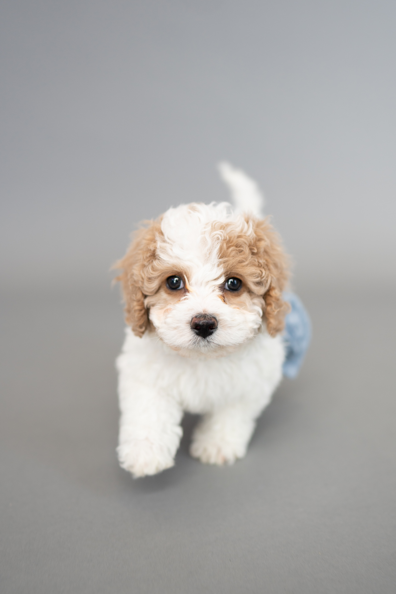

Dogs - Home
Cute Dogs

Dogs are love-sponges when it comes to physical affection, but there is one point where they draw the line: hugging. Being wrapped in a warm embrace actually makes them feel anxious. Your dog’s favorite smell in the whole world is… you. And the more of your body odor on something, the better—as evidenced by the number of times dogs have embarrassingly dragged out their owner’s dirty underwear.
Read MoreChamp's Small World

Just like you love your things, dogs really like to have things that belong exclusively to them. This includes their food bowls, dog bed, and especially their toys. What about when your things suddenly become their things? When a dog chews up your shoe, he may be trying to tell you he needs more toys or attention. Dogs see the world through their noses and love nothing more than when we give them time to sniff instead of rushing on walks.
Read MoreA Happy Day with Dog

You may think your dog can sleep anywhere, anytime, but just because they can sleep through a six-year-old’s birthday party doesn’t mean they like it, says research. And they definitely don’t like being awakened by a herd of said six-year-olds. In fact, startling your dog out of a deep sleep can make them grouchy or even aggressive. Most dogs are not born leaders and they do not want to be in charge of anything.
Read MoreWhite Furball
Poodles…whether you love them or don’t love them yet, they’re certainly hard to miss. Known mostly for their curly locks and bright personalities, Poodles have a rich history and much more to offer than just their looks or their undeniable brains. Within this breed, you’ll see a wide variety of colorings, from solid colors like cafe-au-lait, black, silver, apricot, and brown to Poodles with a blend of colorings, including phantom and particolored Poodles.
Read More